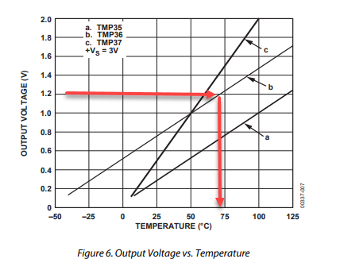

Lees de TMP36 uit en toon de temperatuur in de seriële monitor.
In TinkerCAD vind je een simulatie van de TMP36 temperatuursensor. Bekijk eerst de datasheet van de TMP35 / TMP36 / TMP37 en beantwoord onderstaande vragen. De antwoorden staan er voor de volledigheid bij, maar probeer ze eerst zelf op te zoeken.
Van -40 °C tot +125 °C.
750 mV, of 0,75 V.
10 mV, of 0,01 V.
Zoek in de datasheet de grafiek "Output Voltage vs. Temperature". Die toont de verhouding van de spanning tegenover de temperatuur. Ze is lineair, waardoor je makkelijk van een gegeven spanning naar een temperatuur kan rekenen.

Uit die grafiek en uit je antwoorden hierboven haal je twee gegevens: bij 25 °C staat er 0,75 V op de uitgang, en elke graad erbij levert 0,01 V extra. Daarmee kan je op twee manieren naar een temperatuur rekenen.
map()Je kent map() al van de dimmer: je herschaalt een waarde van het ene bereik naar het andere. Neem je 0,75 V tot 1 V als invoerbereik, dan hoort daar 25 °C tot 50 °C bij:
long temperatuur = map(spanning, 0.75, 1.0, 25, 50);map() werkt met long, en dat zijn gehele getallen. Je 0,75 wordt dus 0 en je 1,0 wordt 1, nog voor er iets berekend is, en de uitkomst is onbruikbaar.
Je kan dat omzeilen door alles met een factor te vermenigvuldigen, bijvoorbeeld 100. Dan wordt 0,75 V een 75, 1 V een 100, en de temperaturen 2500 en 5000. De uitkomst is dan ook honderd keer te groot, dus daar deel je op het einde terug door. Het werkt, maar je code staat vol met factoren die niets met temperatuur te maken hebben.
De twee gegevens uit de datasheet kan je ook als formule opschrijven. Trek de 0,75 V af, deel door 0,01 V per graad, en tel de 25 °C er weer bij:
double temperatuur = (spanning - 0.75) / 0.01 + 25.0;Manier 2. Ze is korter, ze rekent met double en heeft dus geen last van afkapping, en je leest de twee getallen uit de datasheet er rechtstreeks in terug. Bij manier 1 voer je factoren in die je daarna weer wegdeelt, en daar sluipen makkelijk fouten in.
map() blijft wel bruikbaar. Bij de dimmer was het de juiste keuze, want daar ging het om twee bereiken van gehele getallen (0-1023 naar 0-255) en was er niets om af te kappen. De vuistregel is dus map() voor gehele bereiken, en een eigen formule zodra er kommagetallen in het spel zijn.
Maak een programma waarbij je een TMP36 gebruikt en de temperatuur toont in de seriële monitor. Je kan je baseren op onderstaande code:
void setup()
{
Serial.begin(9600);
}
void loop()
{
int waarde = analogRead(A0);
double spanning = ???;
double temperatuur = ???;
Serial.println(temperatuur);
}Sla je oefening op.
Overloop volgende checklist om je oefening zelf te evalueren:
Je kan het met map() doen, maar rechtstreeks rekenen met
double is hier eenvoudiger en nauwkeuriger, precies omdat
je dan geen last hebt van de gehele getallen van map().
Eerst zet je de gelezen waarde om naar een spanning: 1023 komt overeen met 5 V, dus je deelt door 1023 en vermenigvuldigt met 5. Daarna gebruik je de twee gegevens uit de datasheet: bij 25 °C staat er 0,75 V op de uitgang, en per graad komt er 0,01 V bij. De temperatuur is dus 0,75 V aftrekken, delen door 0,01 en er 25 bij optellen.
const int sensorPin = A0;
void setup()
{
Serial.begin(9600);
}
void loop()
{
int waarde = analogRead(sensorPin); // 0..1023
double spanning = waarde * 5.0 / 1023.0; // omrekenen naar volt
// 0,75 V komt overeen met 25 graden, en elke graad erbij is 0,01 V erbij
double temperatuur = (spanning - 0.75) / 0.01 + 25.0;
Serial.print(temperatuur);
Serial.println(" graden C");
delay(500);
}